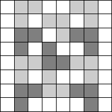

What is the smallest number of 'L' shaped 'corners' out of 3 squares that can be marked on an 8x8 square grid, so that no more 'corners' would fit?
In any given 2x2 square on the grid, at least two squares must be occupied by a 'corner', otherwise an extra corner would fit on that square.
An 8x8 grid can be divided into 16 2x2 squares, meaning at least 32 grid squares must be occupied by 'corners', which would require no fewer than 11 corners.
One such possible arrangement is shown below.
